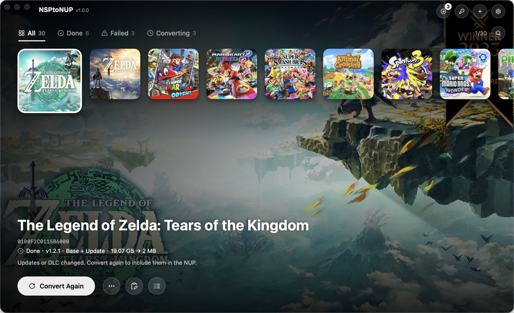
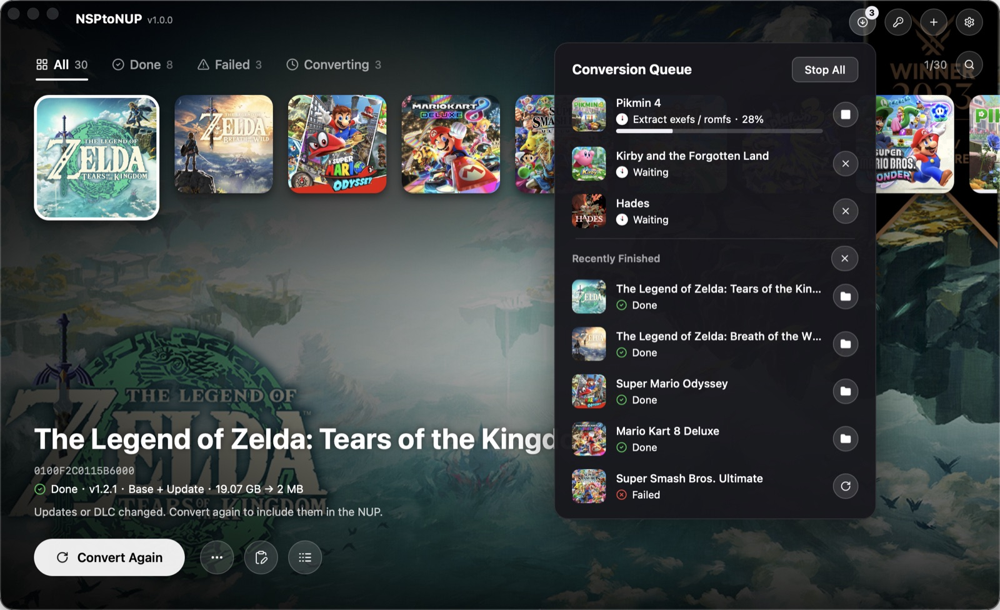

Base + Update + DLC
Combine a base game with its latest update and all of its DLC into one NUP.
Free & open source · macOS · Windows · Linux
Merge a base game, its update and DLC into a single NUP package. Drop in files or whole folders — NSPtoNUP sorts them out for you.

Features
Combine a base game with its latest update and all of its DLC into one NUP.
Add a whole folder: every NSP is identified and grouped by game automatically.
Updates in the newer BKTR format are read directly from the NSP — nothing is unpacked first.
Covers fetched automatically, editable game info, and a clear view of what's done, failed or converting.
Key files are never copied or uploaded, and key values never appear in command lines or logs.
macOS, Windows and Linux, on Intel/AMD and ARM, in English, Japanese and Simplified Chinese.
Screenshots

How it works
Choose the prod.keys (and optionally title.keys) dumped from your own console.
Add NSP files or a folder. Base games, updates and DLC are grouped together.
NUP files are written to Documents/NSPtoNUP, or any folder you choose.
FAQ
NUP is an unencrypted container format for Nintendo Switch game dumps, created by the nup project. NSPtoNUP reads your NSP files and packs their content into NUP.
No. You need your own prod.keys (and optionally title.keys) dumped from your own console, and games you own.
The app is not notarized. The first time, right-click NSPtoNUP.app and choose Open, or allow it in System Settings › Privacy & Security.
macOS 14 or later (Apple silicon); Windows 10 1809 or later with WebView2; Linux with GTK 4.14+ and glibc 2.39 (e.g. Ubuntu 24.04).
Yes. NSPtoNUP is free and open source under the MIT License.